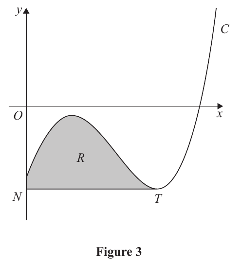
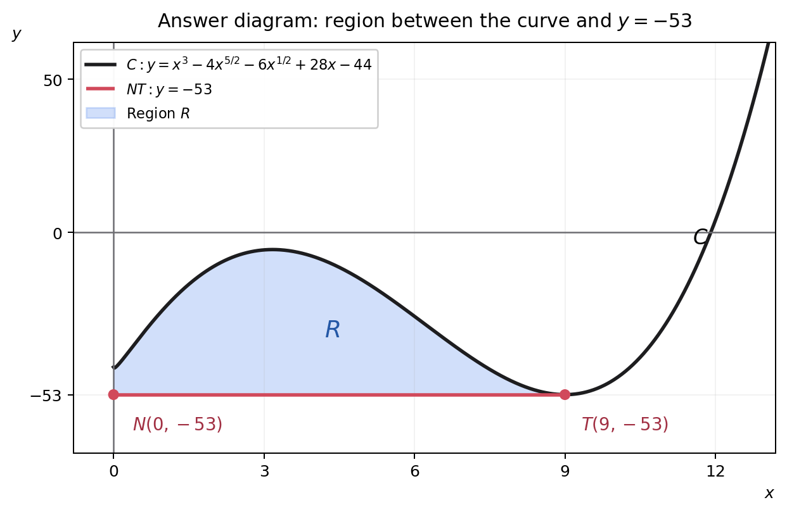

In this question you must show all stages of your working.
Solutions relying entirely on calculator technology are not acceptable.Figure 3 shows a sketch of part of the curve $C$ with equation
$$y=x^3-4x^{5/2}-kx^{1/2}+28x-44 \qquad x\geqslant0$$
where $k$ is a positive constant.
(a) Find $\dfrac{dy}{dx}$ in simplest form. (2)
The point $T$, shown in Figure 3, is a minimum stationary point on $C$.
Given that the $x$ coordinate of $T$ is 9
(b) show that $k=6$ (2)
The line through $T$ parallel to the $x$-axis meets the $y$-axis at the point $N$.
The finite region $R$, shown shaded in Figure 3, is bounded by $C$, the $y$-axis and the line segment $NT$.
(c) Use algebraic integration to find the area of $R$, giving the answer to 3 significant figures. (6)

[10 marks]
Strategy and why it applies. Differentiate term by term with the power rule. The equation is already written using powers, so fractional exponents can be processed directly. Treat $k$ as a constant and $x$ as the variable. Keeping the negative fractional power visible also prepares the exact substitution required in part (b).
Formula / definition first. For a constant $A$, $\dfrac{d}{dx}(Ax^n)=Anx^{n-1}$. Therefore
$$\frac{d}{dx}(x^3)=3x^2,\quad \frac{d}{dx}(-4x^{5/2})=-10x^{3/2},$$
$$\frac{d}{dx}(-kx^{1/2})=-\frac{k}{2}x^{-1/2},\quad \frac{d}{dx}(28x)=28,$$
and the constant $-44$ differentiates to zero. Combining these terms gives
$$\boxed{\frac{dy}{dx}=3x^2-10x^{3/2}-\frac{k}{2}x^{-1/2}+28}.$$
Difficult transition. The $-kx^{1/2}$ term changes in two places: its coefficient becomes $-k/2$ and its exponent becomes $-1/2$. Missing either change loses the accuracy mark. The equivalent form $-k/(2\sqrt{x})$ is valid for $x>0$, but the power form makes the next substitution transparent.
Common trap. Do not differentiate $k$: the question states that it is a positive constant. Also do not retain the $-44$ term in the derivative. A quick reverse check confirms the result: integrating $-10x^{3/2}$ recovers $-4x^{5/2}$, and integrating $-(k/2)x^{-1/2}$ recovers $-kx^{1/2}$.
Exam trigger and transfer. Whenever radicals and parameters appear together, identify the variable, rewrite roots as powers, apply the power rule to each term, then reverse-check the two fractional-power terms. This protects both the coefficient and exponent marks.
Strategy and why it applies. A stationary point has zero gradient. Substitute the printed coordinate $x=9$ into the derivative, set it equal to zero, evaluate the powers exactly and solve the resulting linear equation for $k$. Because the command is “show that”, the unsimplified substitution and the conclusion $k=6$ must both be visible.
Definition and exact powers. Use $\left.\dfrac{dy}{dx}\right|_{x=9}=0$, together with $9^2=81$, $9^{3/2}=(\sqrt9)^3=27$ and $9^{-1/2}=1/\sqrt9=1/3$.
Required substitution proving $k$.
$$3(9)^2-10(9)^{3/2}-\frac{k}{2}(9)^{-1/2}+28=0$$
$$3(81)-10(27)-\frac{k}{2}\left(\frac13\right)+28=0$$
$$243-270-\frac{k}{6}+28=0$$
$$1-\frac{k}{6}=0\quad\Longrightarrow\quad\frac{k}{6}=1\quad\Longrightarrow\quad\boxed{k=6}.$$
Difficult transition and common trap. The ordinary-number terms total $243-270+28=1$, not zero. Also, $9^{-1/2}=1/3$, not 3. Substituting into the original curve would find a height rather than use stationarity, so it cannot determine $k$ without further information.
Check-back. Put $k=6$ into the derivative at $x=9$: $243-270-(6/2)(1/3)+28=243-270-1+28=0$. The condition is satisfied exactly, so the claimed parameter value has been demonstrated rather than assumed.
Exam trigger and transfer. A parameter plus a stationary coordinate signals “differentiate, substitute the coordinate, set equal to zero, solve, and substitute back”. For a show-that question, retain the complete equality chain so every required inference is explicit.
Strategy and why it applies. Find the ordinate of $T$, hence the equation of the horizontal line $NT$. The required region is between this line and the curve from the $y$-axis, $x=0$, to $T$, $x=9$. Use upper minus lower so every vertical strip has non-negative height.
Compute $y_T$ explicitly. With $k=6$ and $x_T=9$,
$$y_T=9^3-4(9)^{5/2}-6(9)^{1/2}+28(9)-44$$
$$=729-4(243)-6(3)+252-44$$
$$=729-972-18+252-44=\boxed{-53}.$$
Therefore $T=(9,-53)$, $N=(0,-53)$, and the line segment $NT$ lies on
$$\boxed{y=-53}.$$
Full area setup. On $0\le x\le9$, the curve is above the line, so
$$A=\int_0^9\left[\left(x^3-4x^{5/2}-6x^{1/2}+28x-44\right)-(-53)\right]dx$$
$$=\int_0^9\left(x^3-4x^{5/2}-6x^{1/2}+28x+9\right)dx.$$
Antiderivative and limits.
$$A=\left[\frac{x^4}{4}-\frac{8}{7}x^{7/2}-4x^{3/2}+14x^2+9x\right]_0^9.$$
Endpoint arithmetic. Since $9^{7/2}=2187$ and $9^{3/2}=27$,
$$A=\frac{6561}{4}-\frac{8}{7}(2187)-4(27)+14(81)+9(9)-0$$
$$=\frac{45927-69984-3024+31752+2268}{28}$$
$$=\frac{6939}{28}=247.821428\ldots$$
Hence, to 3 significant figures,
$$\boxed{A=248\text{ square units}}.$$
Difficult transition and common trap. Subtracting the lower line means $y_C-(-53)=y_C+53$, so the curve’s constant $-44$ becomes $+9$ in the integrand. Integrating the curve alone would give signed area relative to the $x$-axis, not the shaded region. Reversing the subtraction gives the forbidden negative result.
Sense check and transfer. The original and annotated diagrams show the curve above $y=-53$ on the interval and meeting it at $T$, so the area must be positive. For any curve-line region, first write the intersections and “upper minus lower”; only then integrate and check that the sign matches the geometry.
